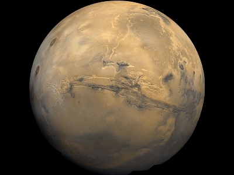

Mars
Mars, Earth's outer neighbor, is the fourth planet from the Sun. Mars' bright appearance and reddish color stand out in the night sky. Impressive surface features such as enormous volcanoes and valleys are frequently obscured by huge dust storms.